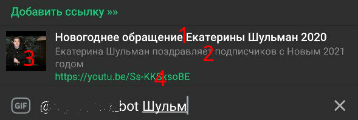
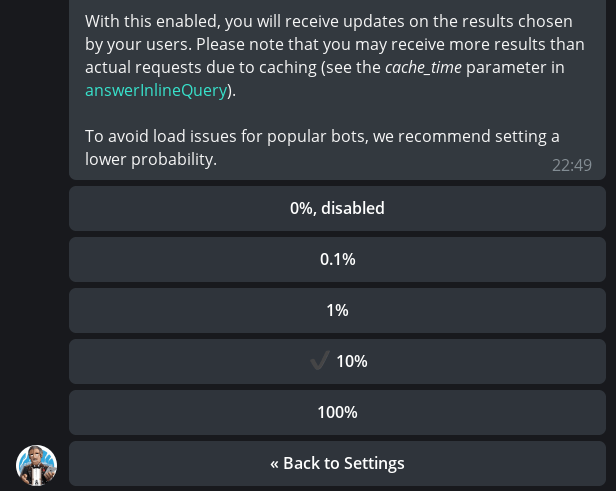

Inlayn-mode¶
Aiogramning eski versiyasi
Aiogram 3.x uchun ushbu bob bu yerda. (rus tilida!)
Kirish¶
Oldingi boblarda bot va foydalanuvchi o‘zaro muloqot qilgan bo‘lsa, Telegramda foydalanuvchiga o‘z nomidan ammo ma’lumotlarni bot orqali olib yuborish imkonini beruvchi maxsus rejim mavjud. Bu inlayn rejimi (Inline mode) deb nomlanadi:

Yuqoridagi skrinshotda ko'rib turganingizdek, yakuniy xabar foydalanuvchi nomidan yuboriladi, biroq dastlabki ro'yxat @imdb boti tomonidan taqdim etilgan. Inline rejimining foydalanuvchilar uchun batafsil tavsifini rasmiy veb-saytda topish mumkin va ushbu bobda biz YouTube videolarni topish va havolalarni yuborishni osonlashtirish uchun o'zimizning oddiy inline botimizni yozamiz.
Inline so'rovlar va javoblar shakli¶
Qachonki foydalanuvchi xabar yozish maydoniga botning username bilan uni chaqirsa, bot InlineQuery turidagi updateni oladi, undan biz uchun from_user fieldi muhim bo'lib, User turi botni chaqirgan foydalanuvchi haqida ma'lumotni, shuningdek, query fieldi, ya'ni so'rov matnini o'z ichiga oladi. Afsuski, hozirda inline bot qaysi chatda chaqirilganligini aniqlashning imkoni yo'q, ehtimol bu foydalanuvchilarning maxfiyligini saqlash uchun qilingan, chunki inline rejimidan foydalanish uchun botni guruh yoki kanalga qo‘shish shart emas.
So'rovga javob berish uchun answerInlineQuery metodini chaqirish kerak, bu yerda siz natijani ma'lum bir turdagi obyektlar massivini va qo'shimcha ravishda turli xil bayroqcha(True-False)larni belgilashingiz kerak, bu haqida keyinroq gaplashamiz. Natija obyektlarining yigirmatacha turi mavjud, ammo ularning ko'plari bir-birining o'zgarishidir. Masalan, InlineQueryResultPhoto rasmga havolani (URL) o'z ichiga oladi va InlineQueryResultCachedPhoto allaqachon Telegramga yuklangan rasmning file_idni o'z ichiga oladi. Bundan tashqari, inline javobda bir xil turdagi obyektlardan foydalanish tavsiya etiladi, chunki foydalanuvchi ilovalari aralash kontentni to'g'ri ko'rsatmaydi (yoki umuman ko'rsatmaydi).
Diqqat: inline rejimida siz Telegramga yangi media fayllarni yuklay olmaysiz, faqat telegram serverlaridagi mavjudlaridan foydalaning yoki Internetdan URL manzilini belgilang.
Eng koʻp qoʻllaniladigan natija obyekt turlaridan biri oddiy matn boʻlgan InlineQueryResultArticle hisoblanadi. Keling, obyektning asosiy elementlarini batafsil ko'rib chiqaylik:

Yuqoridagi rasmdagi raqamlar quyidagilarni bildiradi: 1 - obyektning sarlavhasi; 2 - tavsif; 3 - oldindan ko'rish; 4 - agar foydalanuvchi (3)ni bosadigan bo'lsa, unga biriktirilgan havola. (1)dan tashqari hamma narsa ixtiyoriy. Agar siz (3)ni emas, balki uning o'ng tomonidagi narsani bossangiz, chatga nima yuboriladi? Buning uchun InputMessageContent turi mavjud bo'lib, u to'rtta kichik tip bilan ifodalanadi: Text, Location, Venue va Contact. Eng oddiy holatda, foydalanuvchi bunday havolalar ro'yxatini ko'radi, elementlardan birini bosadi va InputTextMessageContentda ko'rsatilgan matnni oladi.
Qiyinmi? Lekin bu hammasi emas! InputMessageContent boshqa turdagi inline obyektlar bilan ham ishlatilishi mumkin, masalan, javob sifatida foydalanuvchiga stikerlar berish va bosilganda butun boshli stikerlar to'plamiga havola yuborish. Yoki inline rejimida sarlavhani bosganingizda filmning tavsifi. Tajriba qilib ko'ring!
Bot yozamiz¶
Nazariyadan amaliyotga. Botning mohiyatini tasvirlab beraylik: bot bilan muloqotda foydalanuvchi YouTube videosiga havolani qo‘shadi (yoki yangilaydi) va o‘zining tavsifini belgilaydi. Keyin istalgan boshqa suhbatda u botga inline rejimiga murojaat qiladi, ro‘yxatdan avval saqlangan videolardan birini tanlaydi va uni jo‘natadi. Albatta, har bir foydalanuvchi o'zining saqlangan havolalariga ega bo'lishi kerak.
Texnologiya ishlatishda ogohlik
Ushbu bobning asosiy maqsadi inline rejimi haqida gapirish bo'lganligi sababli, FSM ma'lumotlar bazasi va ma'lumotlarni saqlash kabi tegishli tafsilotlar ataylab soddalashtirilgan va matnda eslatib o'tilmaagan bo'lishi mumkin. Masalan, MemoryStorage FSM sifatida ishlatiladi va SQLite ma'lumotlar bazasi sifatida, bu bizga ushbu darsimiz uchun kifoya qiladi. Real proyektlarda esa, FSM doimiy xotirasidan (masalan, Redis) va yanada rivojlangan DBMS (masalan, PostgreSQL), shuningdek, alohida qidiruv tizimidan (ElasticSearch, Sonic...) foydalanish tavsiya etiladi.
Bot inline rejimini yoqishni unutmang!
Uni yoqish uchun @BotFather → /mybots → botingizni tanlang → Bot Settings → Inline Mode → Turn on. Agar kerak bo'lsa, siz qidiruv maydoni matnini "Search..."dan ko'zni quvontiradigan narsaga o'zgartirishingiz mumkin. Va ana endi eng yaxshisi Telegram ilovasini qayta ishga tushirish, aks holda mijoz qurilmasida mavjud telegram ilovasi botning inline rejimi yo‘qligini keshlashi mumkin.
Ma'lumotlarni saqlash¶
Yuqoridagi «talablar»ga asoslanib, biz har bir saqlangan video uchta majburiy subyektlar tomonidan tavsiflanishi mumkin degan xulosaga keldik: Telegram foydalanuvchi identifikatori, YouTube video identifikatori (URLdan olingan) va foydalanuvchi tavsifi. Birinchi ikkita element asosiy kalitni tashkil qiladi, bu esa har bir «Telegram_ID + YouTube_ID» juftligi uchun o'ziga xos unikal(unique)likni beradi. Ma'lumotlar bazasidagi jadval:
CREATE TABLE IF NOT EXISTS "youtube" (
"user_id" INTEGER NOT NULL,
"youtube_hash" TEXT NOT NULL,
"description" TEXT NOT NULL,
PRIMARY KEY("user_id", "youtube_hash")
);
Avvalroq ma'lumotlar bazasiga uncha e'tiborimizni qaratmaslikka ko'proq inlayn rejimining xususiyatlariga to'xtalishni kelishib olgan edik, ammo quyidagi ikkita funksiyani ko'rib chiqish qo'shimcha zarar qilmaydi. Birinchisi, ma'lumotlar bazasiga tavsif bilan havola qo'shish. Bu erda "UPSERT" deb nomlangan bitta hiyla bor, ya'ni. Insert yoki Update. Gap shundaki, SQL so'rovini maxsus usulda shakllantirgandan so'ng, ma'lumotlarni kiritishda (Insert), unikallik buzilgan taqdirda, xatoga yo'l qo'ymasdan, balki shu qatorni bilvosita yangilash (Update)ni bildiradi. Kodning keyingi qismiga qarang. Unda biz ma'lumotlar bazasiga yangi qator qo'shishga harakat qilmoqdamiz, ammo agar ko'rsatilgan «Telegram_ID + YouTube_ID» juftligi allaqachon mavjud bo'lsa, unda tavsif qo'shish o'rniga yangilanadi:
def insert_or_update(user_id: int, youtube_hash: str, description: str):
statement = "INSERT INTO youtube (user_id, youtube_hash, description) " \
"VALUES (:user_id, :youtube_hash, :description) " \
"ON CONFLICT(user_id, youtube_hash) " \
"DO UPDATE SET description = :description"
cursor.execute(statement, {
"user_id": user_id,
"youtube_hash": youtube_hash,
"description": description
})
cursor.connection.commit()
Ikkinchi muhim funksiya - havolalar ro'yxatini olish. Foydalanuvchi natijani filtrlashni xohlashi mumkinligi sababli, ixtiyoriy ikkinchi search_query argumenti mavjud. Mavjudlarini topish uchun esa LIKE operatoridan foydalanamiz. Eslatib o'tamiz, realda bu yondashuv qidiruvning past samaradorligi va aniqligi tufayli mos sizga mos kelishi dargumon, ammo demonstratsiya qilish uchun bu yetarli bo'ladi:
def get_links(user_id: int, search_query: str = None):
statement = "SELECT youtube_hash, description from youtube WHERE user_id = ?"
if search_query:
statement += f" AND description LIKE ?"
result = cursor.execute(statement, (user_id, f"%{search_query}%"))
else:
result = cursor.execute(statement, (user_id,))
return result.fetchall()
Switch-tugmalar¶
PMda havolalarni bot bilan ko'rish va o'chirish elementar tarzda amalga oshiriladi va qo'shish eng oddiy holat mashinasi yordamida tashkil etiladi (FSM mexanizmi haqida ko'proq ma'lumotni oldingi bobda topishingiz mumkin). Bizning oxirgi steytimiz quyidagicha ko'rinishda:
async def description_added(message: types.Message, state: FSMContext):
# FSM dan ma'lumot olish
user_data = await state.get_data()
# Ma'lumotlar bazasiga ma'lumotlarni kiritish
dbworker.insert_or_update(
user_id=message.from_user.id,
youtube_hash=user_data["yt_hash"],
description=message.text
)
# switch-tugmalari bilan keyboard yaratish va xabar yuborish
switch_keyboard = types.InlineKeyboardMarkup()
switch_keyboard.add(
types.InlineKeyboardButton(
text="Попробовать",
switch_inline_query=""
)
)
switch_keyboard.add(
types.InlineKeyboardButton(
text="Попробовать здесь",
switch_inline_query_current_chat=""
)
)
await message.answer(
"Ссылка и описание успешно добавлены в инлайн-режим и "
"станут доступны в течение пары минут!\n"
"Полный список сохранённых ссылок: /links",
reply_markup=switch_keyboard
)
await state.finish()
Ilgari tugmalar bobida biz ikki turdagi inlayn tugmalarni ko'rdik: URL va Callback. Inline rejimi uchun uchinchi tur: Switch. Yuqoridagi kodda ikkita tugma e'lon qilingan, ulardan biri bo'sh switch_inline_query parametri, ikkinchisi bo'sh switch_inline_query_current_chat bilan. Birinchisi sizni chat tanlashni taklif qiladi, so'ngra inline rejimini faollashtirish uchun yozuv maydonida botning usernameni yozadi, ikkinchisi ham xuddi shunday, lekin joriy chatda (bizning holatda, bot bilan shaxsiy xabarda). Agar parametrlar bo'sh bo'lmasa va matn ko'rsatilgan bo'lsa, u botning username yoniga qo'shiladi, masalan: switch_inline_query="text" -> @bot text. @like boti xuddi shunday ishlaydi, bu sizga yangi yaratilgan postni darhol biror joyga yuborish imkonini beradi.
Inline so'rovni qayta ishlash¶
Keling, foydalanuvchining botga so'rovini inline rejimida handlega o'tamiz. Ba'zi hollarda, bo'sh so'rov uchun alohida handlerni yaratish (InlineQuery obyektining query maydonidagi matn uzunligi nolga teng bo'lganda) va qandaydir "umumiy" javob yoki botgga o'tish uchun taklifni ko'rsatish qulay. Lekin bizning holatlarimizda har qanday, hatto bo'sh so'rov ham DBga murojaat qilishimizni talab qiladi, shuning uchun ikkala holatni bitta handlerda birlashtiramiz. Birinchi variantni ko'rib chiqamiz: foydalanuvchida saqlangan havolalar yo'q yoki u hech narsa topilmaydigan so'rovni kiritdi. Keling, kodni ko'rib chiqaylik:
async def inline_handler(query: types.InlineQuery):
# Foydalanuvchi havolalarini olish (query bo'lmasa, None)
user_links = dbworker.get_links(query.from_user.id, query.query or None)
if len(user_links) == 0:
# Natijalar ustidagi sarlavha uchun matn tanlash
switch_text = "У вас нет сохранённых ссылок. Добавить »»" \
if len(query.query) == 0 \
else "Не найдено ссылок по данному запросу. Добавить »»"
return await query.answer(
[], cache_time=60, is_personal=True,
switch_pm_parameter="add",
switch_pm_text=switch_text
)
Keling, ushbu kod qismini batafsil ko'rib chiqaylik. InlineQueryResultArticle obyekti ko'rib chiqilgan yuqoridagi rasmda yuqori qismida "Добавить ссылку »»" qatorini ko'rishingiz mumkin, bu "swtich-obyekti", bizga botning shaxsiysiga /start buyrug'ini qo'shimcha parametr bilan o'tkazadi, bizning holatlarimizda bu add, ya'ni. bot /start add matni bilan xabar oladi va shunga mos ravishda javob bera oladi. Va kodning eng pastki qismida biz answerInlineQuery metodini chaqirib, qo'shimcha tarzda yana ikkita parametr: cache_time va is_personal beramiz. Birinchisi Telegram serverlarida natijalarni keshlash vaqti uchun javob beradi (sekundlarda) va standart qiymati 300 (5 daqiqa)ga teng. Bu shuni anglatadiki, agar foydalanuvchi belgilangan muddat ichida xuddi shunday so‘rov (hatto bo‘sh) bilan inline botga qo‘ng‘iroq qilsa (axax), Telegram uni botga yo‘naltirmaydi, balki keshdagi qiymat bilan darhol javob beradi. Ikkinchi parametr, is_personal, keshlashni har bir foydalanuvchi uchun unikal qiladi va natijalarni shaxsiylashtiradi (bu degani Aziz salom deb so'rov jo'natsa faqat Aziz uchun natijalar keshlanadi, Alida esa salom uchun alohida kesh, agar is_personal=False bo'lganida Aziz birinchi bo'lib so'rov yuborsa u umumiy hamma uchun cache_time vaqtiga qarab keshlanadi va boshqa barcha shu so'rovni yuborganlarda natija darhol chiqadi).
Muallif bir marta @my_id_bot botida is_personal bayrog'chasiga True ko'rsatishni unutib qo'ygan, keshni 86400 soniya (1 kun)ga o'rnatgan va o'z IDsini o'rniga keshlangan boshqa foydalanuvchilar IDlar bilan chalkashlik sodir bo'lgan, foydalanuvchilar orasida ko'plab noroziliklarini keltirib chiqargan. Boshqalar qilgan xatoni siz takrorlamang!
Endi ikkinchi holatni ko'rib chiqamiz: ba'zi havolalar foydalanuvchining so'roviga binoan topiladi. Keling, InlineQueryResultArticle turidagi natija obyektlar massivini tuzamiz:
user_links = dbworker.get_links(query.from_user.id, query.query or None)
articles = [
types.InlineQueryResultArticle(
id=item[0],
title=item[1],
description=f"https://youtu.be/{item[0]}",
url=f"https://youtu.be/{item[0]}",
hide_url=False,
thumb_url=f"https://img.youtube.com/vi/{item[0]}/1.jpg",
input_message_content=types.InputTextMessageContent(
message_text=f"<b>{quote_html(item[1])}</b>\nhttps://youtu.be/{item[0]}",
parse_mode="HTML"
)
) for item in user_links
]
Biz yuqoridagi ba'zi maydonlarni ko'rib chiqqan edik, qolganlarini ko'rib chiqaylik: id - natija obyektining unikal identifikatori uchun (bizning holatimizda bu YouTube video xeshini ishlatish juda qulay), hide_url - natijadagi havolaning (url) ko'rinishini belgilovchi param, thumb_url oldindan ko'rish tasviriga havola, qo'shimcha ravishda oldindan ko'rishning eni (thumb_height) va kengligi (thumb_width)ni belgilashingiz mumkin. InputTextMessageContent obyekti tayinlangan input_message_content argumenti yakuniy xabar uchun javobgardir. Matn formatini buzadigan yovuz belgilardan qochish uchun quote_html() ishlatilgan.
Umuman olganda, inline handlerning to'liq kodi quyidagicha ko'rinadi:
async def inline_handler(query: types.InlineQuery):
user_links = dbworker.get_links(query.from_user.id, query.query or None)
if len(user_links) == 0:
switch_text = "У вас нет сохранённых ссылок. Добавить »»" \
if len(query.query) == 0 \
else "Не найдено ссылок по данному запросу. Добавить »»"
return await query.answer(
[], cache_time=60, is_personal=True,
switch_pm_parameter="add",
switch_pm_text=switch_text
)
articles = [types.InlineQueryResultArticle(
id=item[0],
title=item[1],
description=f"https://youtu.be/{item[0]}",
url=f"https://youtu.be/{item[0]}",
hide_url=False,
thumb_url=f"https://img.youtube.com/vi/{item[0]}/1.jpg",
input_message_content=types.InputTextMessageContent(
message_text=f"<b>{quote_html(item[1])}</b>\nhttps://youtu.be/{item[0]}",
parse_mode="HTML"
)
) for item in user_links]
await query.answer(
articles, cache_time=60, is_personal=True,
switch_pm_text="Добавить ссылку »»",
switch_pm_parameter="add"
)
YouTube xeshi yordamida videoning turli xil ko'rinishlarini osongina olishingiz mumkinligini bilasizmi? Agar yo'q bo'lsa, StackOverflowdagi ushbu ajoyib postga o'ting.
Switch parameteri¶
Biz biroz yuqoriroqda ma'lum qilganimizdek, switch_pm_parameter start-parametr sifatida /add buyrug'ini bergan edik (Bot APIda bu Deep Linking deb ataladi). Uni handle qilish uchun biz /start add Deep-havolasini filtrlashimiz lozim, buning uchun biz ikkinchi quyidagi filtrni osha handlerimiz uchun ro'yxatdan o'tkazamiz:
dp.register_message_handler(cmd_add_link, commands="add", state="*")
dp.register_message_handler(cmd_add_link, CommandStart(deep_link="add"), state="*")
Bot bilan hammasi shu, yuqori o'ng burchakdagi tugmani bosish orqali repoga o'tib manba kodlarini ko'rib chiqishingiz mumkin. Biroq inline rejimini tugatishdan avval, bir nechta qiziqarli xususiyatlarni ko'rib chiqishimiz kerak ...
Qo'shimcha materiallar¶
Natijalarni yuklash¶
Bot APIga ko'ra, bitta answerInlineQuery chaqiruvida maksimal 50 ta element yuborilishi mumkin. Ammo bizga ko'proq kerak bo'lsa-chi? Bunday holatda, next_offset parametri foydalanish kerak. U botning o'zi tomonidan belgilanadi va foydalanuvchi butun joriy paketni aylantirganda, xuddi shu qiymat keyingi so'rovda keladi. Misol uchun, 50 ta elementdan iborat paketlarni qaytaradigan, lekin maksimal qiymati 195 bo'lgan oddiy son generatorini yozamiz:
def get_fake_results(start_num: int, size: int = 50):
overall_items = 195
# Agar boshqa natijalar bo'lmasa, bo'sh ro'yxat yuboramiz
if start_num >= overall_items:
return []
# To'liq bo'lmagan paketni yuborish (oxirgi)
elif start_num + size >= overall_items:
return list(range(start_num, overall_items+1))
else:
return list(range(start_num, start_num+size))
Keling, inline-handlerimizni shunday yozaylikki, u joriy ro'yxatning oxiriga yaqinlashganda, u davom etishni so'raydi. Buning uchun avval offset maydonini tekshiramiz va agar bo'sh bo'lsa, uni 1 ga teng deymiz. Natijalarning soxta ro'yxatini yaratamiz. Agar natija aniq 50 ta obyekt bo'lsa, javobda joriy qiymatga + 50 ga teng next_offset belgilaymiz. Agar obyektlar kamroq bo'lsa, Telegram endi botga so'rov yubormasligi uchun uni bo'sh qatorga aylantiramiz.
async def inline_handler(query: types.InlineQuery):
# offsetni raqam sifatida hisoblaymiz
query_offset = int(query.offset) if query.offset else 1
results = [types.InlineQueryResultArticle(
id=str(item_num),
title=f"Объект №{item_num}",
input_message_content=types.InputTextMessageContent(
message_text=f"Объект №{item_num}"
)
) for item_num in get_fake_results(query_offset)]
if len(results) < 50:
# Boshqa natijalar yo‘q, next_offset bo‘sh qolishi kerak
await query.answer(results, is_personal=True, next_offset="")
else:
# Keyingi to'plamni intiqlik bilan kutamiz :)
await query.answer(results, is_personal=True, next_offset=str(query_offset+50))
Statistika to'plash¶
Kam odam biladi, lekin Telegram sizga inline rejimida botdan foydalanish bo'yicha oddiy statistik ma'lumotlarni to'plash imkonini beradi. Avval @BotFather uchun tegishli sozlamani yoqishingiz kerak: /mybots - (botni tanlang) - Bot Settings - Inline Feedback:

Tugmalardagi foizlar foydalanuvchi inline rejimida obyektni tanlaganda ChosenInlineResult hodisasini olish ehtimolini ko'rsatadi. Masalan, agar qiymat 10%ga o'rnatilgan bo'lsa, har bir obyektni tanlashda botda ChosenInlineResult hodisasini olish uchun o'n foiz imkoniyat mavjud. Telegram botga yuklanish ikki baravar ko‘paygani uchun qiymatni 100% qilib belgilashni tavsiya etmaydi. Bunday hodisalar uchun handlerga misol:
@dp.chosen_inline_handler()
async def chosen_handler(chosen_result: types.ChosenInlineResult):
logging.info(
f"Chosen query: {chosen_result.query}"
f"from user: {chosen_result.from_user.id}"
)